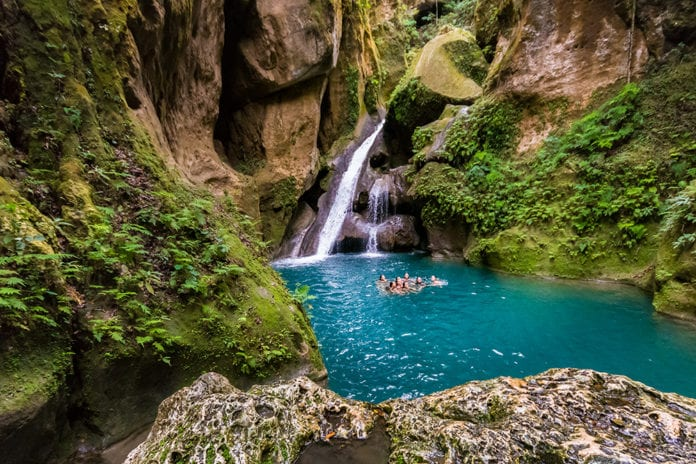

Avoir une idee Des previsions meteorologiques
Vous permet de mieux planifier vos deplacement.
Avoir accès aux prévisions météo facilite une
meilleure organisation de vos trajets
En connaissant la météo à l'avance, vous pouvez planifier vos trajets plus efficacement
Prévisions météorologiques
10 Endroits Que Vous Devez Visiter enHaiti
Saut d'Eau se trouve dans le département du Centre. C'est un lieu renommé pour ses chutes d'eau spectaculaires et ses événements culturels.
Visible au large, depuis les cotés des plages de Lababie, l'île à Rat est une petite île sauvage entourée de banc de sable qui offre également des paysages paradisiaques. C'est à peine croyable! Des pêcheurs proposent parfois des poissons grillés et fruits de mer frais.

Le Bassin Bleu, également appelé « Basenblé » par les Haïtiens, est un site naturel qui se situe non loin de la ville de Jacmel, dans la partie sud-est de la République d'Haïti. Longeant la Petite Rivière de Jacmel, il comporte en réalité quatre petits bassins différents, ainsi qu'une chute d'eau plus spectaculaire.
Saut-Mathurine est une cascade située à Camp-Perrin, Sud. Il s'agit de l'une des plus grandes chutes d'eau en Haïti. La chute d'eau s'étend sur la rivière de Cavaillon dans les hauteurs de Camp-Perrin. Cette chute d'eau mesure à peu près 30 mètres de large et 27 mètres de hauteur.
Furcy est une petite localité située à proximité de Kenscoff, dans les montagnes de l'Ouest d'Haïti. C'est un endroit encore plus élevé en altitude que Kenscoff, offrant ainsi des températures plus fraîches. - La région de Furcy est également connue pour sa beauté naturelle et ses paysages montagneux.
La côte des Arcadins, entre mer et montagne
Totalement bordée de sable blanc, elle est également proche des montagnes (appelées « mornes »), ce qui fait aussi le bonheur des amateurs de randonnée. D'ailleurs, la côte des Arcadins est aussi baptisée « Kote mòn file lanmè », par les Haïtiens.
La ville des Anglais est située sur la côte sud-ouest de la péninsule de Tiburon, juste en face de l'île de la Jamaïque.
Moulin Sur Mer, également connu sous le nom de Moulin sur Mer Beach Resort, est une destination touristique populaire en Haïti. Il est situé sur la Côte des Arcadins, une belle étendue de littoral le long du golfe de la Gonâve.
Labadee (appelée en anglais : Labadee, à destination des touristes anglophones) est une station balnéaire privée située sur la côte septentrionale d'Haïti.
Le Parc National Macaya est renommé pour sa biodiversité exceptionnelle, avec une grande variété d'espèces végétales uniques à Haïti. Le parc comprend divers écosystèmes, tels que des forêts montagneuses, des forêts de nuages, des rivières, des cascades et des formations karstiques.
Les Zones Les Plus Chaudes D'Haiti
Haïti, une île des Caraïbes, est caractérisée par un climat tropical chaud tout au long de l'année. Les principales zones chaudes du pays, telles que Cap-Haïtien, Port-au-Prince, Jacmel, Les Cayes, et Gonaïves,
bénéficient d'une température moyenne variant entre 24 et 31°C (75-88°F).
Ville Chaude de l'ouest
Port-au-Prince (Département de l’Ouest) :
* Température moyenne : Environ 27-31°C (81-88°F).
* Les températures peuvent varier légèrement en fonction de la saison, avec des températures plus élevées pendant les mois d'été.
Ville Chaude du Sud
Les Cayes (Département du Sud) :
* Température moyenne : Environ 27-31°C (81-88°F).
* Comme dans d'autres villes côtières, l'humidité peut rendre la chaleur plus intense.
Ville Chaude du Nord
Cap-Haïtien (Département du Nord) :
* Température moyenne : Environ 26-30°C (79-86°F).
* Cap-Haïtien, étant situé au bord de la mer, bénéficie également d'une humidité élevée qui peut intensifier la sensation de chaleur.
Ville Chaude Du Sud'Est
Jacmel (Département du Sud-Est) :
* Température moyenne : Environ 26-30°C (79-86°F).
* Jacmel, étant également en bord de mer, connaît des températures similaires à celles des autres villes côtières.
Ces températures sont des moyennes annuelles et peuvent fluctuer en fonction des conditions climatiques spécifiques de chaque saison.